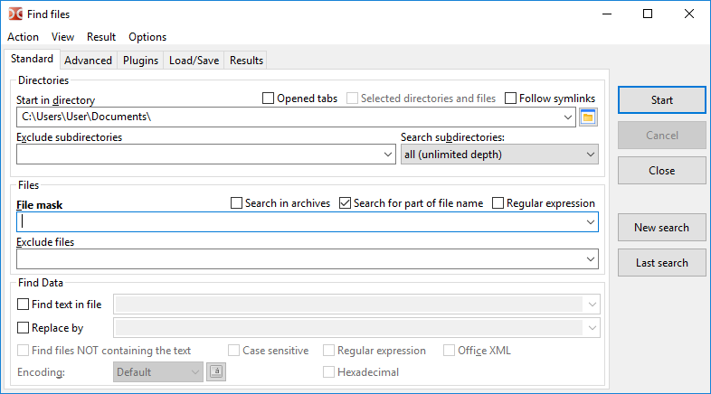
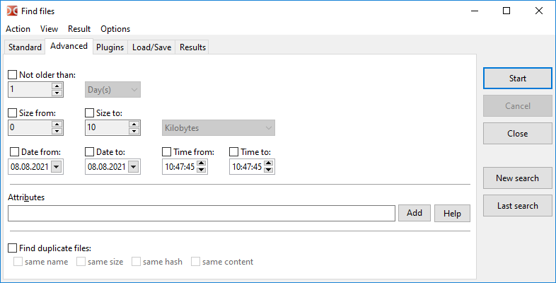
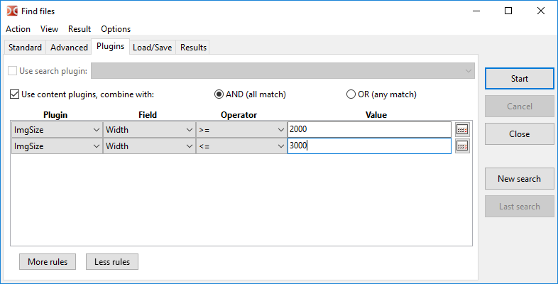
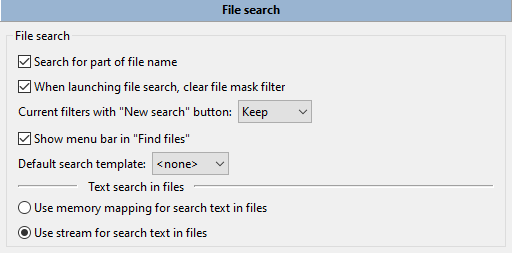

Die Funktionen des Suchwerkzeugs sind nach Registerkarten gruppiert. Wir können mit den Tastenkombinationen Alt+1...Alt+4 zwischen den Registerkarten wechseln.
Außerdem sind einige Funktionen über das Hauptmenü dieses Fensters erreichbar.
Auf dieser Registerkarte können wir Dateien nach Name und Inhalt suchen.

Das Feld In Verzeichnis starten legt das Verzeichnis fest, in dem die Suche beginnt. Standardmäßig wird das aktuelle Verzeichnis des aktiven Panels verwendet.
Weitere Optionen zum Festlegen der Suchorte:
Geöffnete Registerkarten – verwendet werden nur Verzeichnisse geöffneter Registerkarten (Registerkarten des aktiven und des inaktiven Panels).
Ausgewählte Verzeichnisse und Dateien – wenn aktiviert, wird nur unter den ausgewählten Dateien und Ordnern im aktiven Panel gesucht. Sind im Dateipanel Dateien oder Ordner ausgewählt, wird diese Option automatisch aktiviert.
Symbolischen Verknüpfungen folgen – wird eine symbolische Verknüpfung auf ein Verzeichnis gefunden, wird das Zielverzeichnis gelesen und verwendet, andernfalls gilt diese symbolische Verknüpfung als gewöhnliche Datei.
Unterverzeichnisse ausschließen – eine Liste von Verzeichnismasken, die von der Suche ausgeschlossen werden. Hier können wir Ordnernamen sowie relative oder absolute Pfade angeben.
Unterverzeichnisse durchsuchen kann folgende Werte haben:
nur aktuelles Verzeichnis,
Anzahl der Ebenen wählen (von 1 bis 100),
alle (unbegrenzte Tiefe).
Diese Einstellung steuert die Tiefe der Suche im Dateisystembaum. Steht sie auf „nur aktuelles Verzeichnis“, wird nur in dem Verzeichnis gesucht, das im Feld „In Verzeichnis starten“ angegeben ist (in keinen Unterverzeichnissen).
Das Feld Dateimaske legt die Maske für die Suche fest. Oder wir geben einfach den Dateinamen oder einen Teil davon an.
Hinweis: Zu beachten ist, dass Double Commander einen gemeinsamen Verlauf der Dateimasken für mehrere Werkzeuge speichert: Dateien suchen, Verzeichnissynchronisation, Entpacken von Archiven, Befehle zum Auswählen einer Dateigruppe.
Weitere Optionen:
In Archiven suchen – wenn aktiviert, versucht Double Commander zusätzlich, den Inhalt aller Archive in den Suchverzeichnissen zu lesen. Die Liste der unterstützten Formate hängt von den hinzugefügten Packer-Plugins ab.
Nach einem Teil des Dateinamens suchen – sollte deaktiviert sein, wenn wir den genauen Dateinamen verwenden möchten.
Regulärer Ausdruck – wenn aktiviert, können wir reguläre Ausdrücke verwenden.
Dateien ausschließen – eine Liste von Dateinamen, die von der Suche ausgeschlossen werden. Masken werden ebenfalls unterstützt.
Hinweis: Dateimaske, Dateien ausschließen, In Verzeichnis starten und Unterverzeichnisse ausschließen erlauben die Eingabe mehrerer Werte, getrennt durch ein Semikolon „;“ ohne Leerzeichen. Wenn wir eine Datei mit Semikolon im Namen suchen müssen, können wir reguläre Ausdrücke verwenden.
Ist das Kontrollkästchen Text in Datei suchen aktiviert, sucht der Vorgang in den Dateien nach dem angegebenen Text. Wir können diesen Text auch durch einen beliebigen anderen Text ersetzen, der im Feld Ersetzen durch angegeben ist, indem wir das Kontrollkästchen aktivieren.
Weitere Optionen:
Dateien suchen, die den Text NICHT enthalten – zeigt Dateien an, die den in Text in Datei suchen angegebenen Text nicht enthalten.
Groß-/Kleinschreibung beachten – gibt an, dass Groß- und Kleinbuchstaben unterschieden werden, zum Beispiel wären „Fallout“ und „fallout“ verschieden.
Hexadezimal – sucht nach Hexadezimalzeichen (ohne Unterscheidung der Groß-/Kleinschreibung, mit oder ohne Leerzeichen zwischen den Zeichen, zum Beispiel „C0 C1 C2“ oder „c0c1c2“).
Office-XML – schaltet die Suche in Dateien von Microsoft Office (DOCX, XLSX) und OpenOffice/LibreOffice (ODT, ODS) ein.
Außerdem können wir die Kodierung festlegen (UTF, ISO, KOI, DOS, ANSI und so weiter) und reguläre Ausdrücke einschalten.
Hinweis zur Textkodierung: Wir können die Textkodierung festlegen oder einen der besonderen Werte verwenden:
Standard – hängt vom Betriebssystem und vom gewählten Systemgebietsschema ab:
Windows: standardmäßige ANSI-Kodierung des Systems.
Linux und andere Unix-ähnliche Betriebssysteme: standardmäßige Textkodierung des Systems, moderne Systeme verwenden üblicherweise UTF-8.
ANSI – standardmäßige ANSI-Kodierung des Systems (hängt vom Systemgebietsschema ab).
OEM – standardmäßige OEM-Kodierung (DOS) des Systems (hängt vom Systemgebietsschema ab).
Die Schaltfläche Kodierung () ermöglicht, mehr als eine Kodierung anzugeben.
Die Schaltfläche Starten startet die Suche, Abbrechen stoppt die Suche und Schließen schließt das Fenster Dateien suchen.
Neue Suche – löscht die alten Ergebnisse und ermöglicht, eine neue Suche zu starten (auch mit neuen Bedingungen).
Letzte Suche – lädt die Parameter der vorherigen Suche (in der aktuellen Sitzung, vor dem Schließen von Double Commander).
Standardmäßig speichert Double Commander den Verlauf der Eingabefelder. Um unnötige Einträge aus dem Verlauf zu löschen, können wir Shift+Del verwenden, und wir können das Speichern des Verlaufs auch im Einstellungsabschnitt Konfiguration ausschalten.
Die Registerkarte Erweitert ermöglicht, zusätzliche Bedingungen anzugeben: Datum, Uhrzeit und Alter der Datei (nach dem Änderungsdatum), kleinste und größte Dateigröße sowie Dateiattribute.

Dateiattribute können manuell oder mit einem kleinen Assistenten an der Schaltfläche Hinzufügen angegeben werden (weitere Einzelheiten zur Verwendung von Dateiattributen stehen unten). Die Schaltfläche Hilfe öffnet den nächsten Unterabschnitt dieser Seite.
Hier können wir außerdem wählen, nach doppelten Dateien anhand eines oder mehrerer der folgenden Kriterien zu suchen:
Dateinamen vergleichen;
Dateigrößen vergleichen;
Datei-Prüfsummen vergleichen: verwendet wird eine Prüfsumme BLAKE3 (x86-64), BLAKE2b (andere 64-Bit-Prozessoren) oder BLAKE2s;
Dateiinhalt vergleichen (byteweiser Vergleich).
Im Ergebnis werden Dateinamen, die Gruppennummer der übereinstimmenden Dateien und die Dateiorte angezeigt. Nach dem Übernehmen in die Liste können wir außerdem einen besonderen Auswahlmodus verwenden, in dem wir nur Duplikate auswählen können: Eine Gruppe auswählen und Eine Gruppe abwählen im Untermenü Markieren.
Um nach bestimmten Attributen zu suchen, müssen wir eine Zeichenkette als Muster eingeben, die festlegt, nach welchen Attributen gesucht wird und ob sie gesetzt oder nicht gesetzt sein sollen.
Ein einzelnes Attribut wird in folgendem Format angegeben:
<attribute>+ oder <attribute>-
Das Pluszeichen bedeutet, dass die Datei dieses Attribut gesetzt haben muss, ein Minuszeichen bedeutet, dass die Datei dieses Attribut nicht gesetzt haben darf.
Die verschiedenen Bezeichner <attribute> sind folgende:
| Attribute unter Windows | |
|---|---|
| Attributbuchstabe | Bedeutung |
a | Archiv |
c | komprimiert (NTFS-Komprimierung) |
d | Verzeichnis |
e | verschlüsselt (EFS-Verschlüsselung) |
h | versteckt |
l | symbolische Verknüpfung |
p | Sparse |
r | schreibgeschützt |
s | System |
t | temporär |
| Attribute unter Unix/Linux (Zugriffsrechte) | |
|---|---|
| Buchstaben der Zugriffsrechte | Bedeutung |
ur | Benutzer lesen |
uw | Benutzer schreiben |
ux | Benutzer ausführen |
gr | Gruppe lesen |
gw | Gruppe schreiben |
gx | Gruppe ausführen |
or | Andere lesen |
ow | Andere schreiben |
ox | Andere ausführen |
us | Benutzer-ID setzen |
gs | Gruppen-ID setzen |
sb | Sticky-Bit |
| Attribute unter Unix/Linux (Dateitypen) | |
|---|---|
| Buchstaben der Dateitypen | Bedeutung |
b | Blockgerät |
c | Zeichengerät |
d | Verzeichnis |
f | benannte Pipe (FIFO) |
l | symbolische Verknüpfung |
r | reguläre Datei |
s | Socket |
Unter Unix/Linux können wir die Zugriffsrechte auch oktal angeben. Zum Beispiel entspricht 0750 der Kombination aus ur, uw, ux, gr und gx.
Mehrere Attribute können mit einer UND-Beziehung kombiniert werden. Dazu wird einfach ein Muster nach dem anderen angegeben.
Zum Beispiel: r+s+h+ trifft auf Dateien zu, bei denen alle drei Attribute gesetzt sind: schreibgeschützt, versteckt und System.
Außerdem können solche Gruppen von UND-Attributen mit einer ODER-Beziehung kombiniert werden. Das geschieht mit dem Zeichen „|“ (senkrechter Strich).
Zum Beispiel: r+|s+h+ trifft auf Dateien zu, die entweder:
UND-Folgen lassen sich mit dem Zeichen „!“ am Anfang der Folge verneinen.
Zum Beispiel: !r+s+h+ trifft auf Dateien zu, bei denen nicht alle drei Attribute gesetzt sind: schreibgeschützt, versteckt und System. Die gefundene Datei kann keines, eines oder mehrere dieser Attribute gesetzt haben, aber nicht alle.
Die Verneinung gilt nur für UND-Folgen, deshalb trifft das Muster !r+|!s+h+ auf Dateien zu, die entweder:
r-)| Beispiel unter Windows | |
|---|---|
| Beispielbuchstaben | Bedeutung |
a+s-h- | trifft auf Dateien zu, bei denen das Attribut Archiv gesetzt ist und weder das Attribut System noch das Attribut versteckt gesetzt ist |
e+|c+ | trifft auf Dateien zu, die entweder komprimiert oder verschlüsselt sind |
d- | trifft auf Dateien zu, aber nicht auf Verzeichnisse |
| Beispiel unter Unix/Linux | |
|---|---|
| Beispielbuchstaben | Bedeutung |
uw+|gw+|ow+ | trifft auf Dateien zu, die entweder vom Benutzer, von der Gruppe oder von jedem anderen beschreibbar sind |
222+ | trifft auf Dateien zu, die vom Benutzer und von der Gruppe und von jedem anderen beschreibbar sind |
d+ox+ | trifft auf Verzeichnisse zu, die für jeden zugänglich sind |
!700+ | trifft auf Dateien zu, die für den Benutzer nicht vollständig zugänglich sind |
Suche mit den Such-Plugins (DSX) und den Inhalts-Plugins (WDX) (die Beschreibung der Plugin-Typen und ihrer Installation steht hier).
Ein Beispiel für die Bildsuche nach Breite mit Mindest- und Höchstwerten:

Die Schnittstelle der DSX-Plugins ermöglicht, ihnen Parameterwerte von den Registerkarten „Standard“ und „Erweitert“ zu übergeben. Die genaue Liste der übergebenen Werte hängt von den Fähigkeiten des jeweiligen Plugins ab.
WDX-Plugins ergänzen die Suche. Ihre Felder können nach den folgenden Regeln kombiniert werden:
UND (alle treffen zu) – alle Bedingungen müssen zutreffen.
ODER (eines trifft zu) – eine Übereinstimmung genügt.
Operator und Wert hängen vom Typ der Daten ab, die das Plugin-Feld zurückgibt: Zahl, Zeichenkette, Datum, Uhrzeit oder boolescher Typ. Bei manchen Zahlenwerten können wir eine Maßeinheit wählen (zum Beispiel für Größe oder Dauer). Die folgenden Vergleichsoperationen werden unterstützt:
| Operator | Beschreibung |
|---|---|
= |
gleich |
!= |
ungleich |
=(case) |
gleich, Groß-/Kleinschreibung beachten |
!=(case) |
ungleich, Groß-/Kleinschreibung beachten |
> |
größer |
< |
kleiner |
>= |
größer oder gleich |
<= |
kleiner oder gleich |
contains |
Zeichenkette enthält den angegebenen Text |
!contains |
Zeichenkette enthält den angegebenen Text nicht |
contains(case) |
Zeichenkette enthält den angegebenen Text, Groß-/Kleinschreibung beachten |
!contains(case) |
Zeichenkette enthält den angegebenen Text nicht, Groß-/Kleinschreibung beachten |
regexp |
Zeichenkette entspricht dem regulären Ausdruck |
!regexp |
Zeichenkette entspricht dem regulären Ausdruck nicht |
Abhängig vom Typ der Daten, die das Plugin-Feld zurückgibt, steht ein Assistent für die Werteingabe zur Verfügung: Taschenrechner (Zahl) oder Kalender (Datum und/oder Uhrzeit).
Registerkarte Laden/Speichern – ermöglicht, Suchparameter zu speichern, damit sie später erneut verwendet werden können.
Außerdem sehen wir hier die Vorlagen, die in den Programmeinstellungen (Farben > Dateitypen, Kurzinfos) und in einigen Werkzeugen (Eine Gruppe auswählen, Verzeichnisse synchronisieren) erstellt wurden.
Unter der Vorlagenliste steht ein Feld mit einem Hinweis: Für die ausgewählte Vorlage werden die Werte von Dateimaske und In Verzeichnis starten angezeigt (falls sie gespeichert wurden).
Diese Registerkarte enthält die Suchergebnisse (einfach eine Liste der vollständigen Dateinamen) und hat die folgenden Schaltflächen:
Betrachten – öffnet die ausgewählte Datei im Dateibetrachter (F3).
Bearbeiten – öffnet die ausgewählte Datei im Editor (F4).
Zur Datei gehen – schließt das Suchfenster, öffnet das Verzeichnis der ausgewählten Datei im aktiven Dateipanel und setzt den Cursor auf diese Datei (Enter oder Doppelklick).
Damit das Suchfenster geöffnet bleibt, können wir die Taste Space verwenden oder für den Befehl cm_GotoFile ein anderes Tastenkürzel zuweisen und in den Parametern close=0 hinzufügen.
In die Liste übernehmen – überträgt eine Liste der gefundenen Dateien in das aktive Dateipanel.
Das Kontextmenü ist ebenfalls verfügbar:
In neuer Registerkarte/neuen Registerkarten öffnen – wie der Befehl Zur Datei gehen, aber die ausgewählte Datei wird in der Hintergrund-Registerkarte geöffnet (mehrere ausgewählte Dateien werden in getrennten Hintergrund-Registerkarten geöffnet).
Im Dateibetrachter anzeigen.
Im Editor anzeigen.
Aus der Liste entfernen (oder Del) – ermöglicht, unpassende Ergebnisse aus der Liste zu entfernen (das Dateisystem bleibt unberührt).
Alle gefundenen Einträge anzeigen – macht die Aktion des vorherigen Befehls rückgängig.
Um mehrere Dateien auszuwählen, können wir die Maus und die Tasten Ctrl und Shift oder Shift und die Pfeiltasten verwenden.
Die Tasten left arrow und right arrow wechseln den Fokus zwischen der Liste der Suchergebnisse und der Schaltfläche Neue Suche.
Die Liste der gefundenen Dateien wird gelöscht, wenn wir eine neue Suche starten oder die Anwendung schließen. Das bedeutet, wir können den Suchdialog erneut öffnen und das Ergebnis der vorherigen Suche ansehen.
Weitere Parameter zum Suchwerkzeug stehen im Einstellungsabschnitt Dateioperationen > Dateisuche.

Dateisuche:
Nach einem Teil des Dateinamens suchen – Wenn nicht angekreuzt, sucht Double Commander nach der genauen Namensübereinstimmung.
Beim Starten der Dateisuche die Dateimaske leeren – Wenn aktiviert, leert Double Commander das Feld Dateimaske jedes Mal automatisch.
Aktuelle Filter mit der Schaltfläche „Neue Suche“ – legt den Zustand der übrigen Suchparameter fest: Double Commander behält sie bei, setzt sie auf den Standardzustand zurück oder fragt nach.
Menüleiste in „Dateien suchen“ anzeigen – Dieses Menü enthält die Befehle des Dialogs Dateien suchen (angezeigt werden auch die Tastenkürzel) sowie Einträge für den schnellen Sprung zu diesem Einstellungsabschnitt und zu den Einstellungen der Tastenkürzel.
Standard-Suchvorlage – Wir können eine der zuvor gespeicherten Suchvorlagen wählen, und Double Commander verwendet ihre Parameter als Standardparameter, jedes Mal wenn wir den Dialog Dateien suchen öffnen.
Textsuche in Dateien:
Speicherabbildung für die Textsuche in Dateien verwenden – Kopiert die Datei vor der Suche in den virtuellen Speicher. Das ist schneller, benötigt aber einen leistungsfähigeren Computer.
Datenstrom für die Textsuche in Dateien verwenden – Teilt die Datei in Teile, danach beginnt die Suche (langsamer, aber es werden weniger Ressourcen benötigt).